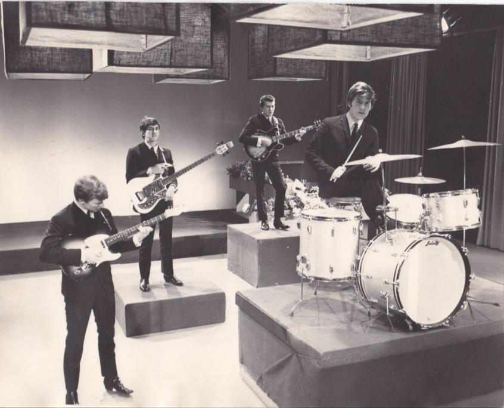

Needles and Pins gave The Searchers their second UK number one in a row.
The song had already flopped once before they ever touched it, and a studio accident helped turn their version into a hit.

Table of Contents
- Sonny Bono, Jack Nitzsche and Jackie DeShannon's Original
- How The Searchers Turned It Into the UK Chart Topper
- Cover Versions and the Song's Life After 1964
- FAQ
Sonny Bono, Jack Nitzsche and Jackie DeShannon's Original
Jack Nitzsche and Sonny Bono wrote the song in early 1963.
Jackie DeShannon recorded it first for Liberty Records that February, with Dick Glasser producing.
DeShannon later said she helped write the melody but never received formal credit or royalties.
Drummer Hal Blaine overdubbed his part afterward, giving the track a spacious reverb.
DeShannon's single stalled at number 84 on the Billboard Hot 100 in May 1963.
It fared far better in Canada, reaching number one on the CHUM chart that July.
How The Searchers Found the Song in Hamburg
The Searchers were deep into a residency at Hamburg's Star-Club, the same club that had toughened up The Beatles a couple of years earlier.
They heard British singer Cliff Bennett cover DeShannon's record onstage there in late 1963.
The band rushed their own version into a session, hoping to beat Bennett's take to release.
How The Searchers Turned Needles and Pins Into a Number One
The band recorded their version at Pye Studios in London.
The session ran December 16 and 17, 1963, with Tony Hatch producing.
Pye Records released the single on January 7, 1964.
It reached number one in Britain, Ireland and South Africa within weeks.
The song crossed to the United States that March.
It entered the Billboard Hot 100 at number 75 and peaked at number 13 in April, ten weeks on the chart.
That crossover made The Searchers only the second Liverpool act to reach the American charts, after The Beatles.
The Studio Accident That Made It Sound Like Twelve Strings
Two ordinary six-string electric guitars played the intro together in unison.
An engineer at Pye left the echo switch on by mistake during the session.
That doubled, echoed tone gave the guitars a chiming, layered ring.
It sounds like a twelve-string, even though no twelve-string guitar touched the recording.
A faulty, squeaky bass drum pedal is also audible through the finished track, left in rather than fixed.
The Searchers performed the song live on The Ed Sullivan Show on April 5, 1964.
They also played "Ain't That Just Like Me" that same night.
Cover Versions and the Song's Life After 1964
The song kept finding new audiences for decades after The Searchers took it to number one.
Cher recorded a version in 1965, tucked away as a B-side the following year.
- Smokie's 1977 rock ballad remake reached number ten in the UK and number one in Austria
- The Ramones cut a punk version as a bonus track on a reissue of Rocket to Russia
- Tom Petty and the Heartbreakers performed it live with Stevie Nicks in 1985, released the following year
| Version | Year | UK peak | US peak |
|---|---|---|---|
| Jackie DeShannon (original) | 1963 | n/a | 84 |
| The Searchers | 1964 | 1 | 13 |
| Smokie | 1977 | 10 | 68 |
| Tom Petty and the Heartbreakers with Stevie Nicks | 1986 | n/a | 37 |
FAQ
Who wrote the original song?
Jack Nitzsche and Sonny Bono are the credited writers.
Jackie DeShannon, who recorded it first, later said she helped write it at the piano but never received formal credit or royalties.
Was The Searchers' version a cover?
Yes.
Jackie DeShannon released the original in February 1963.
The Searchers heard singer Cliff Bennett perform it at Hamburg's Star-Club and rushed to record their own take first.
Did Needles and Pins reach number one in the US?
No.
It topped the UK, Irish, and South African charts, but peaked at number 13 on the Billboard Hot 100 in April 1964.
Why does the recording sound like a twelve-string guitar?
Two regular six-string guitars played the intro in unison.
An engineer accidentally left the echo switch on.
The doubled, echoed tone reads as a chiming twelve-string even though no twelve-string was used on the session.
What other artists released cover versions?
Cher recorded a version in 1965, Smokie had a worldwide hit with it in 1977, the Ramones cut it for a Rocket to Russia reissue, and Tom Petty and the Heartbreakers performed it live with Stevie Nicks in 1985.
Did Jackie DeShannon's original chart at all?
Barely in the US, where it stalled at number 84 on the Billboard Hot 100 in May 1963.
It fared much better in Canada, reaching number one on the CHUM chart that July.
The accidental echo that opened Needles and Pins turned into one of the defining guitar sounds of the British Invasion.
Read the full Searchers story for how that jangle carried into two more UK number ones.
See how Herman's Hermits and The Dave Clark Five filled out Merseybeat's wider chart run.
It all sits inside the same British Invasion that carried the song across the Atlantic.
Back to the 1960smusic.net homepage to explore every genre of the decade.